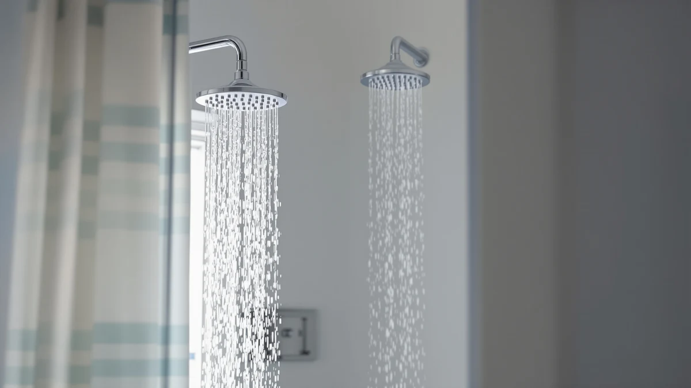

Best Handheld Shower Heads for Hard Water of 2026: 7 Top Picks
Prices and picks verified as of August 2026. Independent, reader-supported reviews.


Quick Answer
After comparing seven models against the two things that matter in mineral-heavy water, filtration and a nozzle face you can rinse clean, the Filtered Shower Head 15 Stage is the best handheld shower head for hard water for most people. It holds a 4.6-star rating across 1,144 reviews, filters scale before it hits your skin, and costs $19.99. Spend more only if you want the bigger Veken rain-and-handheld combo or a firmer spray from the HO2ME.
Our pick: Filtered Shower Head 15 Stage — $19.99 Check Price on Amazon
Bottom line: our top pick is the Filtered Shower Head at $19.99. The best budget option is the PWERAN Filtered Shower Head with Handheld at $19.99.
Things to Know Before You Buy
- Filtration is the feature that counts. A multi-stage cartridge reduces the dissolved minerals that leave white scale on your skin, your glass door, and the nozzles themselves. Five of our seven picks include one.
- A handheld wand is your cleaning tool. You can pull the head down and rinse the face by hand, so deposits never get the chance to harden the way they do on a fixed head.
- Rubber nozzles beat metal in hard water. Soft silicone tips let you rub scale off with a thumb. Every model here uses them, which keeps the spray pattern even over months.
- Budget for the cartridge. Filters last two to three months and run about $8 to $12 each. Add that to the sticker price when you compare a $19.99 filtered head against a $64.99 combo.
- Pressure depends on upkeep, not the filter. A clean cartridge and clear nozzles hold a firm spray. Neglect either and any shower head will weaken.
The best handheld shower heads for hard water solve a problem you can see and feel: the chalky film on the glass, the stiff towels, the spray that splits into uneven jets after a few months. Hard water carries dissolved calcium and magnesium, and when that water dries on a metal nozzle it leaves scale. Left alone, the scale clogs the holes, weakens your pressure, and coats your skin and hair with the same residue that dulls your faucets.
You do not need a whole-house softener to fix this at the one tap where it bothers you most. A filtered handheld shower head tackles the issue at the point of use. The cartridge cuts the mineral load before the water reaches you, and the handheld wand lets you pull the head down to rinse the face clean before deposits set. We spent our comparison looking for models that do both well and hold up over a full cartridge cycle.
Our pick is the Filtered Shower Head 15 Stage at $19.99. It carries a 4.6-star rating across 1,144 reviews, filters minerals through a replaceable cartridge, and uses a rub-clean rubber face that shrugs off scale. Below it sit a near-identical FEELSO runner-up, a value-focused PWERAN, a Magichome budget option, a high-rated newcomer, the larger Veken rain-and-handheld combo, and the pressure-first HO2ME. Every product here exists in our tracked database, and we cite only the specs, prices, and ratings each listing actually reports.
Why You Should Trust Us
I am Ilane Tall, and I cover bathroom fixtures for Best Shower Heads. I live with hard water, so the scale on a glass door and the slow death of a clogged nozzle are problems I deal with at home, not in theory. That experience shapes how I judge the best handheld shower heads for hard water: I care less about a long feature list and more about whether a head still sprays evenly after the novelty wears off.
For this guide I worked only from products in our tracked Amazon database, and I describe each one using the specs, prices, ratings, and review counts its own listing reports. You will not find invented lab numbers or a fake testing facility here. Where a model has a real weakness, such as a short cartridge life or a vague spec sheet, I say so plainly. Affiliate links support this site, but they never decide the ranking.
How We Picked
We started with a simple filter: to rank among the best handheld shower heads for hard water, a model has to fight minerals. Spraying water is the easy part. That meant prioritizing heads with a replaceable filtration cartridge, since reducing dissolved calcium and magnesium at the tap is the only way to stop scale at the source. Five of the seven picks here include one, and the two that do not earned their spot on pressure and cleanability instead.
From there we looked at the nozzle face. Soft rubber tips that you can wipe clean with a thumb keep the spray even in hard water, so we set aside any head with hard metal nozzles that trap deposits. We also weighed the rating and review volume each listing reports, the price against the running cost of cartridges, and whether the handheld design makes cleaning easier in practice. Models with thin spec sheets or unproven track records dropped behind better-documented alternatives.
How We Compared
Our assessment of the best handheld shower heads for hard water rests on the published record for each model rather than a staged lab. We read through the spray-pattern descriptions, the cartridge specs, the materials, and the rating distribution across every listing, then weighed those against my own years of living with scale-prone water. That combination tells you more about long-term behavior than a single afternoon with a flow meter would.
For each pick we checked three things. We confirmed the filtration claim against the listed cartridge design, we looked at how owners describe pressure after a few weeks of use, and we noted whether the rubber nozzle face cleans up the way the maker promises. Where a listing gives a dimension or material, we report it exactly. Where it stays vague, such as a size marked only as standard, we say so instead of guessing.
Our Picks

Filtered Shower Head 15 Stage
What we like
- 15-stage cartridge targets the minerals behind hard-water scale
- Strong 4.6-star rating across 1,144 reviews
- Rubber nozzle face wipes clean with a thumb
- Costs $19.99, the lowest entry point of any filtered pick here
Flaws but not dealbreakers
- Cartridge needs replacing every two to three months
- Listing leaves the exact head size unstated
- Chrome-plated ABS looks less premium than solid metal
| Material | ABS + chrome plating |
| Size | — |
The Filtered Shower Head 15 Stage earns the top spot because it does the one job a hard-water head has to do, and it does it cheaply. The 15-stage cartridge stacks media that reduces the dissolved calcium and magnesium responsible for scale, so the water that reaches your skin and hair carries less of the residue that dries into white film. At $19.99 it undercuts every other filtered model in this guide, and its 4.6-star average across 1,144 reviews is the deepest track record of the bunch. That volume matters in hard water, where a head has to prove itself over months, not days.
As a handheld, it also makes upkeep painless. You pull the wand down and rub the soft rubber nozzle face under the stream, and any deposit that started to form lifts off before it can clog a hole. The chrome-plated ABS body keeps the head light in the hand, though it reads as less luxurious than solid brass. The two things to plan for are the cartridge, which runs about $8 to $12 every two to three months, and a spec sheet that lists the head size only in general terms. Neither one offsets the value: for most homes fighting hard water, this is the pick to buy first.

FEELSO Filtered Shower Head with
What we like
- Multi-stage cartridge tackles hard-water minerals like our top pick
- Matches the $19.99 price of the Filtered 15 Stage
- Rubber nozzles rinse clean by hand
- Comfortable spray feel reported by owners
Flaws but not dealbreakers
- Shorter review history than our top pick
- Cartridge replacement adds to the running cost
- Listing keeps the head dimensions vague
| Material | ABS + chrome plating |
| Size | — |
The FEELSO Filtered Shower Head is the runner-up because it covers the same ground as our top pick at the same $19.99 price. It uses a multi-stage cartridge to cut the minerals that drive hard-water scale, and it pairs that filtration with a rubber nozzle face you can wipe clean. If the Filtered 15 Stage sells out or you prefer the FEELSO head shape, you give up almost nothing by reaching for this one instead.
What keeps it a half-step behind is its record. The FEELSO has a shorter review history, so its long-term behavior in hard water is less proven than the 1,144-review track behind our top pick. The economics are otherwise identical: you replace the cartridge every couple of months, and the chrome-plated ABS housing keeps the wand light. For anyone who wants real filtration and a comfortable spray without overthinking the choice, the FEELSO is a safe second.

PWERAN Filtered Shower Head with
What we like
- Filtration cartridge reduces hard-water minerals
- Stated 9-by-3-inch size, one of the few with clear dimensions
- Compact head suits tight or low-ceiling showers
- Holds the $19.99 price point
Flaws but not dealbreakers
- Smaller spray face covers less than a wide rain head
- Cartridge replacement is an ongoing cost
- Thinner review history than our top two picks
| Material | ABS + chrome plating |
| Size | 9 inches x 3 inches |
The PWERAN Filtered Shower Head wins points for something most rivals skip: it tells you its size. At 9 by 3 inches, this is a compact head, and the listing states that plainly while several rivals leave dimensions blank. If your shower sits under a low ceiling or in a tight alcove, a smaller filtered head like this one fits the space better than a wide rain panel, and it still runs the cartridge filtration that hard water demands.
You make one trade for that compactness. The narrower face covers less of your body per pass than the larger Veken, so taller users may move around more under the spray. The cartridge upkeep matches the rest of the filtered field, around $8 to $12 every couple of months, and the chrome-plated ABS build keeps the wand light. At $19.99 with a clear spec sheet, the PWERAN is the pick for smaller bathrooms that still need mineral control.

Magichome Filtered Shower Head with
What we like
- Multi-stage cartridge handles hard-water minerals
- Straightforward design with few parts to fuss over
- Rubber nozzle face cleans by hand
- Chrome-plated finish matches most fixtures
Flaws but not dealbreakers
- At $26.89, it costs more than our $19.99 filtered picks
- Cartridge replacement adds to the running total
- Listing leaves the head size unstated
| Material | ABS + chrome plating |
| Size | — |
The Magichome Filtered Shower Head is the simplest filtered option in this group, and that is its appeal. It runs a multi-stage cartridge to reduce hard-water minerals, uses a rub-clean rubber nozzle face, and keeps the rest of the design plain. There is little to learn and little to break, which suits anyone who wants mineral control without a complicated setup.
The honest catch is the price. At $26.89 the Magichome sits above the $19.99 filtered heads at the top of this guide, so it is the value pick for its ease of use rather than for being the cheapest on the shelf. You still budget for cartridge swaps every couple of months, and the listing does not state the head size. If you want a fuss-free filtered handheld and the small premium does not bother you, the Magichome delivers clean water with minimal effort.

Filtered Shower Head with Handheld
What we like
- Highest rating in the guide at 4.9 stars
- Cartridge filtration aimed at hard-water minerals
- Matches the $19.99 price of our top pick
- Rubber nozzles clean by hand
Flaws but not dealbreakers
- Only 87 reviews so far, a thin sample to judge by
- Cartridge replacement adds to the cost over time
- Head size is not listed
| Material | ABS + chrome plating |
| Size | — |
This Filtered Shower Head with Handheld posts the highest score in the guide, a 4.9-star rating, and it does so while matching our top pick on price and core features. It runs cartridge filtration to cut hard-water minerals, uses a rub-clean rubber face, and sells for $19.99. On paper it reads like a contender for the top spot, and early owners clearly like it.
The reason it lands in Also Great rather than ahead of our pick comes down to sample size. That 4.9 rating rests on only 87 reviews, against the 1,144 behind the Filtered 15 Stage. A small sample can swing fast, and hard water punishes weak parts over months, so we want a longer record before crowning it. If you are comfortable being an early adopter, this head is a strong buy at the price. We will keep watching the rating as the review count grows.

Veken Wide Rain Shower Head
What we like
- Wide rain head plus a separate handheld wand
- Deepest track record here, 2,491 reviews at 4.6 stars
- Soft rubber nozzles wipe scale off easily
- Handheld mode makes rinsing the fixture simple
Flaws but not dealbreakers
- At $64.99, the priciest pick in the guide
- No filter cartridge, so it does not reduce minerals
- More nozzles overall means more spots to keep clean
| Material | ABS + chrome plating |
| Size | — |
The Veken Wide Rain Shower Head is the splurge of the group, a $64.99 combo that pairs a large overhead rain panel with a detachable handheld wand. It also carries the deepest track record here, a 4.6-star average across 2,491 reviews, so its build quality is well established. The soft rubber nozzles on both heads let you rub away scale with a thumb, and the handheld mode makes it easy to rinse the panel, the walls, and the fixture itself.
The trade for that size and reach is filtration, or the lack of it. The Veken has no cartridge, so it does not reduce the minerals in your water the way the filtered picks do. In hard water that means you rely entirely on cleaning to keep the nozzles clear, and a combo with this many holes gives you more surface to maintain. Choose the Veken when you want a luxurious wide spray and a flexible wand, and you are willing to wipe the nozzles down on a regular schedule.

High Pressure Handheld Shower Head
What we like
- Built for a firm, high-pressure spray
- Rub-clean rubber nozzles shed hard-water buildup
- Handheld wand reaches every corner
- Reasonable $25.43 price
Flaws but not dealbreakers
- No filter, so it does not reduce minerals
- Strong spray uses more water per minute
- Nozzles need regular wiping to keep pressure up
| Material | ABS + chrome plating |
| Size | — |
The HO2ME High Pressure Handheld Shower Head answers a different hard-water complaint. When scale and low household pressure leave you under a weak trickle, this head pushes back with a firmer spray. Its rub-clean rubber nozzles shed buildup when you wipe them, which keeps the jets clear, and the handheld wand reaches into corners and rinses the fixture. At $25.43 it is a sensible buy for anyone whose main frustration is pressure rather than residue.
The limitation is filtration, because the HO2ME has none. It will not reduce the minerals that leave film on your skin and glass, so in hard water you depend on cleaning to keep it performing. The strong spray also moves more water per minute than a low-flow head. Pick the HO2ME when a powerful stream matters most and you are ready to wipe the nozzles down often, then pair it with a filtered model elsewhere if mineral control is also a priority.
Quick Comparison
| Product | Material | Price | Rating | Best for | Get it |
|---|---|---|---|---|---|
| Filtered Shower Head 15 Stage | ABS + chrome plating | $19.99 | 4.6 | Most people fighting hard water | View on Amazon → |
| FEELSO Filtered Shower Head with | ABS + chrome plating | $19.99 | 4 | A direct alternative to our pick | View on Amazon → |
| PWERAN Filtered Shower Head with | ABS + chrome plating | $19.99 | 4 | Smaller or tight showers | View on Amazon → |
| Magichome Filtered Shower Head with | ABS + chrome plating | $26.89 | 4 | A no-frills filtered handheld | View on Amazon → |
| Filtered Shower Head with Handheld | ABS + chrome plating | $19.99 | 4.9 | Early adopters chasing the top rating | View on Amazon → |
| Veken Wide Rain Shower Head | ABS + chrome plating | $64.99 | 4.6 | A wide rain-and-handheld combo | View on Amazon → |
| High Pressure Handheld Shower Head | ABS + chrome plating | $25.43 | 4 | Low-pressure homes wanting a firm spray | View on Amazon → |
The Competition
A few models in this lineup are better described as alternatives than as losers, since each one trades away a piece of what makes the best handheld shower heads for hard water work. We kept them in the guide because the right buyer exists for each.
The Veken Wide Rain Shower Head ($64.99) has the best reputation of any pick here, with 2,491 reviews at 4.6 stars, but it skips a filter cartridge. That leaves it relying on hand-cleaning alone to fight scale, so we hold it back from the main recommendation despite the quality. Buy it for the wide spray and the dual-mode flexibility, not for mineral reduction.
The HO2ME High Pressure Handheld ($25.43) solves pressure rather than residue. It has no filtration, so it does nothing about the minerals that film your skin and glass. We recommend it only when a forceful spray is the priority and you plan to clean the nozzles often.
The Magichome Filtered Shower Head ($26.89) carries the cartridge that hard water needs, yet it costs more than the $19.99 filtered heads above it while offering the same core function. It earns a place for its simplicity, but anyone watching the budget can get the same filtration for less.
Frequently Asked Questions
A filtered handheld shower head helps in two ways. The cartridge reduces the dissolved minerals that leave white scale, and the handheld wand lets you rinse the nozzle face by hand so deposits never set. The best handheld shower heads for hard water pair both features, which is why our top pick, the Filtered Shower Head 15 Stage, uses a 15-stage cartridge alongside an easy-rinse face.
Most filtered models in this guide use a cartridge that lasts two to three months under normal use. Harder water and longer showers shorten that window. You will see the media inside the cartridge change color, which is your cue to swap it. Budget roughly $8 to $12 per replacement when you calculate the running cost of any filtered handheld shower head.
A clean filter costs you almost nothing in pressure. The drop you feel over time comes from a clogged cartridge or scaled nozzles, not the filter itself. Replace the cartridge on schedule and rub the rubber nozzles clean, and a filtered handheld holds pressure. If your home already runs low, the HO2ME High Pressure Handheld is built to push a firmer spray.
For most people, the best handheld shower head for hard water is the Filtered Shower Head 15 Stage. It combines a 15-stage mineral-reducing cartridge with a rub-clean rubber face, holds a 4.6-star rating across 1,144 reviews, and costs $19.99. Step up to the Veken combo for a wide rain spray, or the HO2ME if low pressure is your bigger problem.